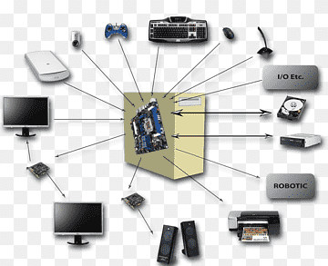

¿Qué son los periféricos?
Los periféricos son dispositivos externos conectados a una computadora para extender sus capacidades y funciones. Estos dispositivos pueden ser de entrada, de salida o de entrada/salida y permiten a los usuarios interactuar con la computadora de diferentes maneras. Los periféricos de entrada se utilizan para ingresar información a la computadora, como el teclado, el mouse, el escáner, el lector de código de barras, entre otros. Los periféricos de salida se utilizan para mostrar la información procesada por la computadora, como el monitor, la impresora, los altavoces, entre otros. Los periféricos de entrada/salida son dispositivos que permiten tanto la entrada como la salida de información, como el disco duro externo, el puerto USB, la tarjeta de red, entre otros.
En el siguiente enlace podemos observar un video que habla sobre los periféricos.
Video de periféricos
